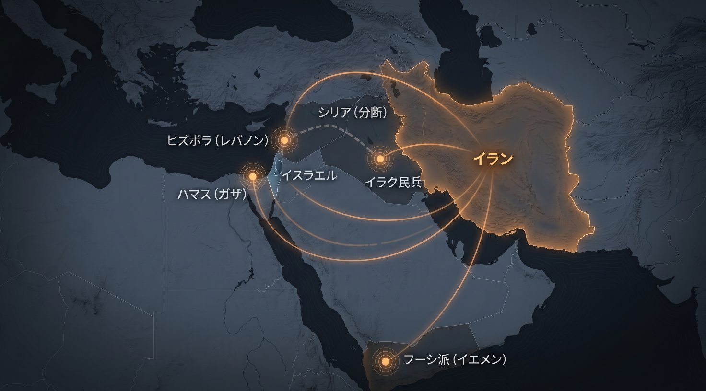
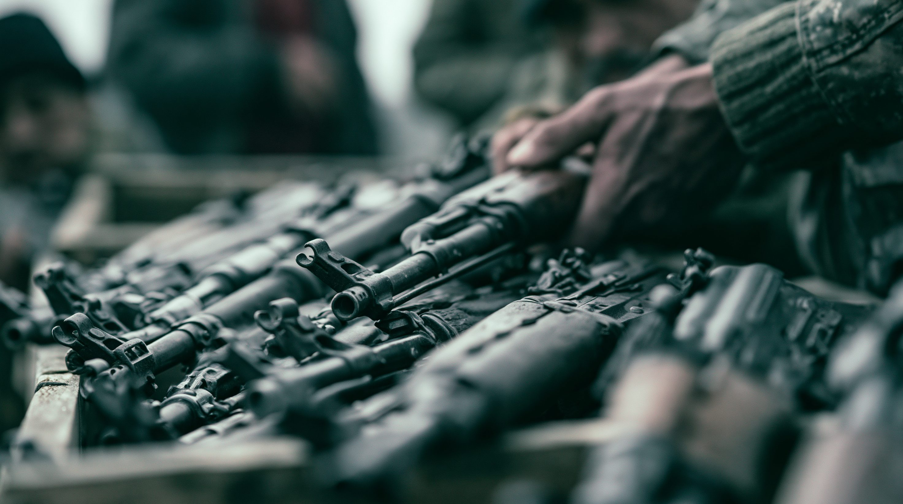
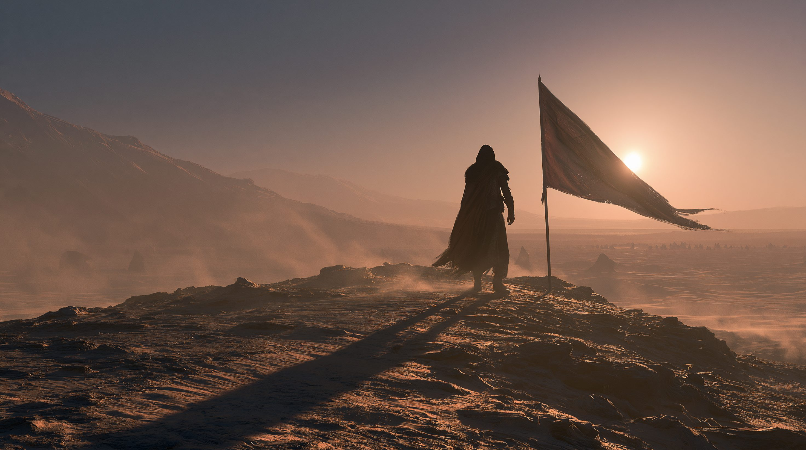

01 「抵抗の枢軸」とは何か — 枠組みと前方防衛
「抵抗の枢軸（Axis of Resistance）」とは、イランが主導する非国家武装組織と友好政権の緩やかなネットワークの総称だ。
レバノンのヒズボラ、ガザのハマス、イエメンのフーシ派、イラクのシーア派民兵、そしてかつてのシリア・アサド政権が、
アメリカとイスラエルに対抗するという共通の旗のもとに結びついていた。
これは正式な同盟ではなく、資金・武器・訓練・イデオロギーを通じてイランが束ねる「ハブ＆スポーク（中心と放射）」型の構造である。
この枠組みを支えるのが、イランの「前方防衛（Forward Defense）」というドクトリンだ。
イラン・イラク戦争（1980〜88年）で国土を侵され、化学兵器の被害まで受けた経験から、
イランは「戦争は自国の領土の外で戦う」という発想を徹底するようになった。
代理勢力を国境のはるか外側に配置することで、敵を自国から遠ざけ、いざという時には複数の戦線で反撃できる態勢を築く——
これが「火の輪（Ring of Fire）」と呼ばれる、イスラエルを包囲する抑止の構造である。
この戦略を実際に運営してきたのが、革命防衛隊（IRGC）の精鋭部門である「コッズ部隊」だ。
コッズ部隊は約40年をかけて各地の武装組織を育て、武器を供与し、戦術を指導してきた。
代理勢力を使う最大の利点は「否認可能性（plausible deniability）」——
攻撃があってもイランは「自分たちは関与していない」と主張でき、直接の報復を受けにくい。
低コストで広範囲に影響力を投射できるこの仕組みは、長らくイランの地域戦略の屋台骨だった。
用語解説
抵抗の枢軸（Axis of Resistance）
イランが主導する反米・反イスラエルの武装組織・政権ネットワークの総称。
ヒズボラ・ハマス・フーシ派・イラクのシーア派民兵などが含まれる。
前方防衛（Forward Defense）
戦争を自国領土の外側で戦うというイランの戦略思想。
イラン・イラク戦争の被侵略体験から生まれ、代理勢力による緩衝帯の構築につながった。
コッズ部隊（Quds Force）
革命防衛隊（IRGC）の海外作戦を担う精鋭部門。
代理勢力への武器供与・訓練・資金提供・戦術指導を統括する、枢軸の「設計者」。
否認可能性（Plausible Deniability）
代理勢力を使うことで、攻撃の主体が自国だと立証されにくくする利点。
イランは直接の報復を避けつつ敵に打撃を与えられる。
火の輪（Ring of Fire）
イスラエルを複数方向から取り囲む代理勢力の配置。
レバノン（北）・ガザ（南西）・イエメン（南）・シリア（東北）からの多正面の脅威を指す。
02 なぜイランは代理勢力を築いたか — 火の輪の論理
イランが莫大な資源を代理勢力に注ぎ込んできたのには、明確な戦略的計算がある。
通常戦力でアメリカやイスラエルに正面から対抗するのは不可能だ。
そこでイランは「非対称」の手段——各地の武装組織を通じた間接的な圧力——を選んだ。
その論理は、おおむね4つに整理できる。
「国外で戦う」緩衝帯
代理勢力を国境の外に配置することで、戦火を自国領土から遠ざける。
イラン・イラク戦争で本土を破壊された記憶が、この「前方で食い止める」発想の原点にある。
否認可能性という盾
代理勢力が攻撃しても、イランは「直接の関与はない」と主張できる。
この曖昧さが、敵からの直接報復を抑制し、エスカレーションの責任を回避させる。
低コストの抑止
正規軍を派遣せずとも、武器と資金の供与で広範囲に影響力を投射できる。
イスラエルを多正面から脅かす「火の輪」は、安価で持続可能な抑止装置だった。
イデオロギーの輸出
1979年のイラン革命以来、シーア派の革命思想と「反シオニズム」を共有する勢力を支援。
宗派的・思想的な絆が、単なる利害を超えた結束を生み出してきた。
この「火の輪」は、地理的に役割が分担されていた。
各勢力がイスラエルや米軍をそれぞれの方角から牽制し、シリアがそれらを繋ぐ「陸の回廊」として機能していた。
ヒズボラレバノン（イスラエル北方）
枢軸の「王冠の宝石」。約15万発のロケット・ミサイルでイスラエル全土を射程に収め、抑止の中核を担った。
ハマスガザ（イスラエル南西）
スンニ派だが反イスラエルで連携。2023年10月の越境攻撃が、結果的に枢軸全体を巻き込む戦争の引き金になった。
フーシ派イエメン（イスラエル南方・紅海）
紅海の海運を脅かし、長距離ミサイルでイスラエルを攻撃。地理的に最も遠く、最も自律性が高い。
シーア派民兵イラク（イランとの境界）
イラク駐留米軍を牽制し、イランとシリアを結ぶ補給線を守る役割。複数組織の連合体（PMF）。
アサド政権シリア（陸の回廊）
イランからヒズボラへ武器を運ぶ「陸の回廊」の要。2024年12月の崩壊が、枢軸全体の構造を断ち切った。

イランを起点に、レバノン（ヒズボラ）・ガザ（ハマス）・イエメン（フーシ派）・イラク（シーア派民兵）がイスラエルを多正面から包囲する「火の輪」。シリアはイランとヒズボラを結ぶ「陸の回廊」だったが、2024年12月のアサド政権崩壊で断たれた。※イメージ画像（生成AI）
03 タイムライン — 火の輪が消えるまで
1982年
ヒズボラ創設 — 枢軸の原点
レバノン内戦とイスラエルの侵攻を背景に、革命防衛隊の支援でヒズボラが結成された。
これがイランの代理勢力モデルの原型となり、以後40年にわたる「火の輪」構築の出発点になった。
革命防衛隊が育成
代理勢力モデルの原型
2023年10月7日
ハマスの越境攻撃 — 連鎖の引き金
ハマスがイスラエルへ大規模な越境攻撃を実施し、ガザ戦争が勃発。
これに呼応してヒズボラやフーシ派も攻撃を開始し、枢軸全体がイスラエルとの全面対決に引きずり込まれていった。
イランが長年築いた「火の輪」が、初めて同時に試される事態となった。
ガザ戦争が勃発
枢軸が連鎖的に参戦
2024年秋
ヒズボラ壊滅 — 指導部とナスララの死
イスラエルがヒズボラに対し、通信機（ポケベル）の一斉爆発という前例のない攻撃を仕掛け、指導部を次々に排除。
長年の指導者ナスララも殺害された。枢軸最強の戦力だったヒズボラは、組織の中枢を失って機能不全に陥った。
ポケベル一斉爆発
ナスララ殺害
指導部が壊滅
2024年11月
レバノン停戦 — ヒズボラの後退
アメリカの仲介でイスラエルとヒズボラの停戦が成立。
ヒズボラは南部からの撤退を迫られ、軍事的優位を完全に失った。
「抵抗」の象徴だった組織が、防御一辺倒に追い込まれた瞬間だった。
米国仲介の停戦
南部からの撤退
2024年12月
アサド政権崩壊 — 「陸の回廊」が折れた
シリアの反体制派がダマスカスを制圧し、半世紀続いたアサド家の支配が終焉。
これによりイランからヒズボラへ武器を運ぶ「陸の回廊」が断たれた。
枢軸のハブ＆スポーク構造は「曲がった」のではなく「折れた」——
ヒズボラは戦略的な後背地を永久に失った。
アサド家支配の終焉
補給線の切断
枢軸構造の破綻
2025年1月〜4月
レバノンの主権回復 — ヒズボラの武装解除へ
レバノンはイランとシリアの干渉なしに大統領と首相を選出。
ヒズボラの特権的な地位を剥奪し、武器を国家が独占することを憲法で明記した。
4月までにヒズボラは南部265拠点のうち190をレバノン軍へ移譲。
国家のなかの「国家」だった組織が、初めて国家の管理下に置かれ始めた。
武器の国家独占を憲法化
265拠点中190を軍へ移譲
2026年2月
イラン本体が攻撃を受ける — ハーメネイー死亡
米・イスラエルがイランの核施設・指導部を直接攻撃し、ハーメネイー最高指導者が死亡
（イラン核交渉の詳細はこちら）。
「火の輪」が敵を遠ざけるはずだったのに、攻撃はイラン本土に到達した。
代理勢力が弱体化したことで、前方防衛の前提そのものが崩れていたのだ
（核抑止をめぐる議論はこちら）。
イラン本土への直接攻撃
前方防衛の前提が崩壊
2026年3月
ヒズボラの無謀な介入 — 全軍事活動を禁止される
弱体化したヒズボラがイランへの攻撃に呼応して対イスラエル介入を試みるが、かえって壊滅的打撃を受けた。
これを受けてレバノン政府はヒズボラのすべての軍事・治安活動を禁止。
かつて枢軸最強だった組織は、地域の力の方程式から事実上退場した。
介入が裏目に
全軍事活動を禁止
2026年6月（現在）
イラク民兵の「武器移譲」表明 — 残る火種
イラクのシーア派民兵カタイブ・ヒズボラなどが、武器を国家の管理下に置く方針を表明。
ただしドローンやミサイルなどの高度兵器は手放さず、実質的には骨抜きとの見方が強い。
フーシ派はなお自律的に活動を続けており、「火の輪」は消えても、火種は完全には消えていない。
武器の国家管理を表明
高度兵器は温存
フーシ派は活動継続

レバノン軍へ移譲されるヒズボラの武器——国家のなかの「国家」として独自の武装を誇った組織が、初めて武器を手放す側になった。武装解除は、代理勢力が地域の力学から退場する決定的な一歩だ。※イメージ画像（生成AI）
04 代理勢力5つの視点
40年の投資が揺らぐ
コッズ部隊は約40年かけて代理勢力網を築いてきた。だがシリアの陥落で「陸の回廊」を失い、
ヒズボラは壊滅。前方で敵を食い止めるはずの「火の輪」が機能せず、ついに本土が攻撃された。
ドクトリンは残る
ネットワークは打撃を受けたが、前方防衛という発想そのものが消えたわけではない。
イランは残存勢力の再編と、新たな代理勢力の育成によって枢軸の再建を図る可能性がある。
イランへの忠誠 ← → 自律・国家統合
忠誠・一体自律
背景：枢軸の「中心（ハブ）」そのもの。各勢力への武器・資金・訓練の供給源であり、
ネットワーク全体の戦略を統括してきた当事者。
最強の戦力から最大の敗者へ
約15万発のロケットを擁し「枢軸の王冠の宝石」と呼ばれた。
だが指導部の壊滅、ナスララの死、シリアの後背地喪失で凋落。
ロケットは約2万発まで激減し、組織の中枢機能を失った。
国家の管理下へ
レバノン政府は特権を剥奪し、武器の国家独占を憲法化。
2026年3月の介入失敗で全軍事活動を禁止された。
「国家のなかの国家」だった存在が、国家に飲み込まれつつある。
イランへの忠誠 ← → 自律・国家統合
忠誠・一体自律
背景：1982年創設の枢軸の原点。イランとの結びつきが最も強い「忠実な代理勢力」だったが、
いまや国家統合を強いられる立場に転落した。
連鎖の引き金を引いた
2023年10月の越境攻撃が、枢軸全体を巻き込む戦争の発端になった。
その後のガザ戦争で指導部・インフラ・統治能力に甚大な損害を受けた。
完全な根絶は困難
スンニ派組織で、もともとイランとは宗派が異なり半自律的な関係。
密集市街地で活動するため壊滅は難しく、指導部の再生と戦術の適応を続けている。
イランへの忠誠 ← → 自律・国家統合
忠誠・一体自律
背景：スンニ派でありながら反イスラエルでイランと連携してきた「異色の代理勢力」。
利害と思想が一致する限りでの協力関係にある。
地理が生んだ生存力
イランから最も遠く、イスラエルの直接攻撃が届きにくい。
紅海の海運を脅かし長距離ミサイルでイスラエルを攻撃する能力を持ち、
枢軸が次々と倒れるなかで「最後まで立っている」勢力となった。
慎重なエスカレーション管理
2026年の戦争では全面参戦を回避。
組織の弱体化が進むなか、米軍への大規模攻撃は「組織崩壊を早めるリスク」と判断し、
自らの生存を最優先する現実的な計算を見せている。
イランへの忠誠 ← → 自律・国家統合
忠誠・一体自律
背景：イエメン内戦を背景に台頭。イランの支援を受けつつも独自の動機で動く、
最も自律性の高い代理勢力。地理的な遠さが生存性を高めている。
自派の権力・資産を優先
多くの民兵組織は、イランの利益よりも自らの権力基盤と資産の維持を優先するようになった。
2026年の戦争でも、イスラエルに攻撃の口実を与えるのを恐れ、米軍への攻撃を控えた。
「武器移譲」の実態
2026年5〜6月、カタイブ・ヒズボラなどが武器の国家管理を受け入れると表明。
だがドローン・ミサイルなどの高度兵器は手放さず、実質的には骨抜きとの見方が強い。
国家統合と自律維持のあいだで「ヘッジング（両賭け）」している。
イランへの忠誠 ← → 自律・国家統合
忠誠・一体自律
背景：イラク戦争後に台頭した複数組織の連合体（PMF）。
自称23.8万人、イラン系の現実的兵力は8〜10万人。イラク政治に深く組み込まれている。
| 勢力 |
拠点 |
現在の状態 |
イランとの距離感 |
| イラン（コッズ部隊） |
イラン本国 |
ネットワークが打撃・本土も被弾 |
枢軸の中心・設計者 |
| ヒズボラ |
レバノン |
壊滅・武装解除へ |
最も忠実だが国家統合を強制 |
| ハマス |
ガザ |
損耗するも再生 |
スンニ派・半自律の連携 |
| フーシ派 |
イエメン |
弱体化も活動継続 |
最も自律・独自の動機 |
| シーア派民兵 |
イラク |
ヘッジング・部分統合 |
自派の利益を優先 |

枢軸の多くが倒れたなか、地理的に最も遠いフーシ派は「最後まで立つ勢力」となった。だが弱体化のなかで全面戦争を避ける慎重さも見せる。火の輪は消えても、火種は完全には消えていない。※イメージ画像（生成AI）
05 データ・統計
主要代理勢力の推定戦闘員数
ヒズボラ約10万人、イラクのイラン系民兵8〜10万人が二大勢力。ハマスは開戦前で約3万人。
数の上では大きいが、近年の戦闘で多くが損耗した。出典：Britannica / 各種推計（2024〜26）
ヒズボラのロケット・ミサイル保有数の激減
開戦前に約15万発を誇り、欧州の多くの軍を上回る火力とされた。だが度重なる攻撃で約2万発まで激減し、
「枢軸の王冠の宝石」は抑止力の大半を失った。出典：CSIS Missile Threat / イスラエル軍推計
最盛期の枢軸（〜2023年）
◯シリアの「陸の回廊」が機能し、武器が自由に流れた
◯ヒズボラが約15万発で全イスラエルを射程に収める
◯多正面の「火の輪」がイスラエルを包囲・抑止
◯イラン本土は前方の緩衝帯で守られていた
現在の枢軸（2026年）
×アサド崩壊で「陸の回廊」が断たれた
×ヒズボラは壊滅・武装解除され約2万発に
×イラク民兵はヘッジング、フーシ派のみ活動継続
×イラン本土が直接攻撃を受けた